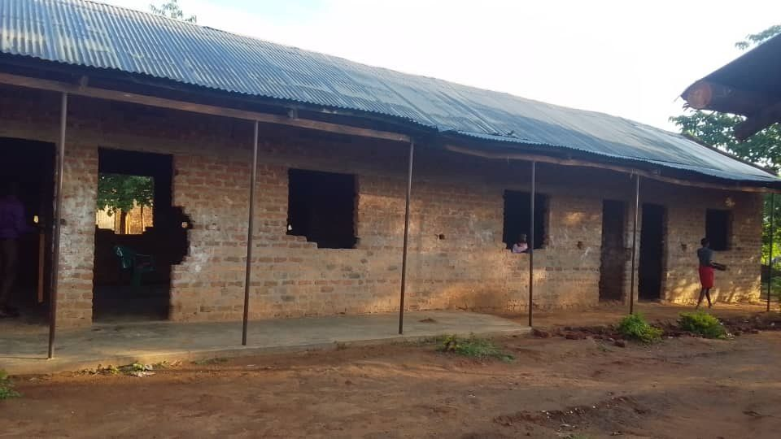
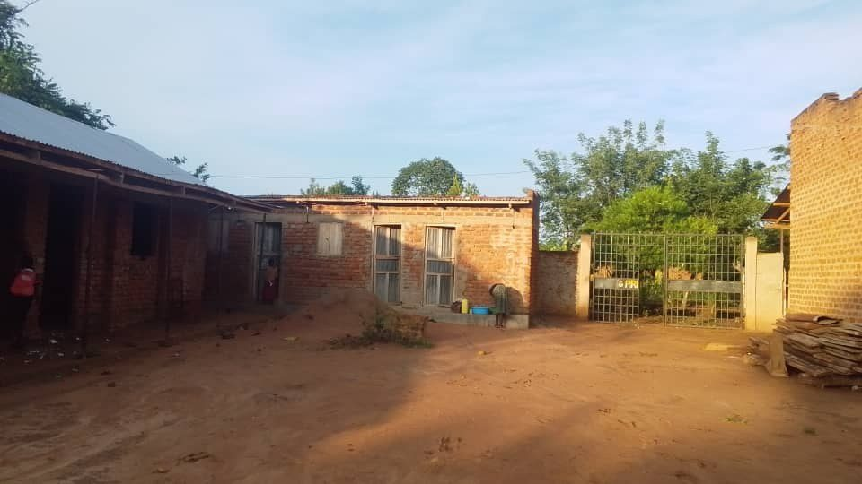
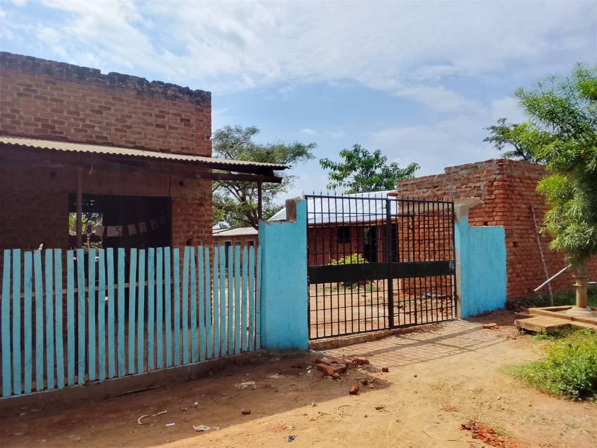
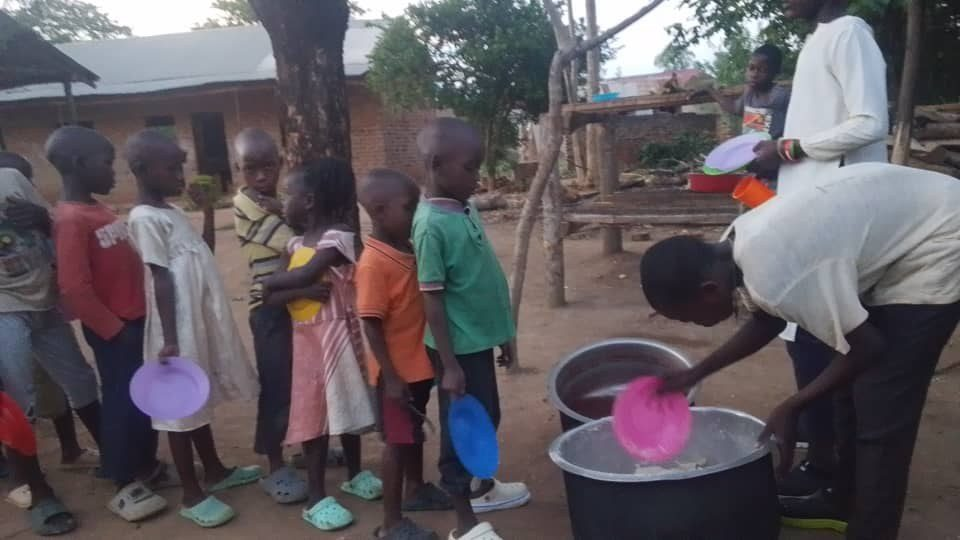
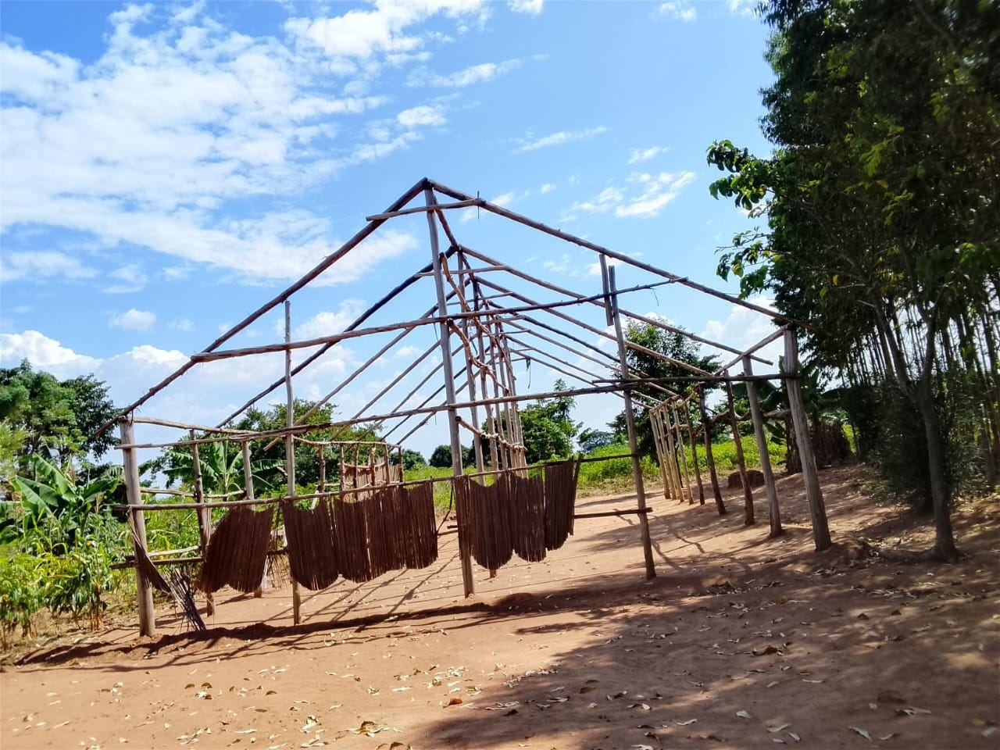
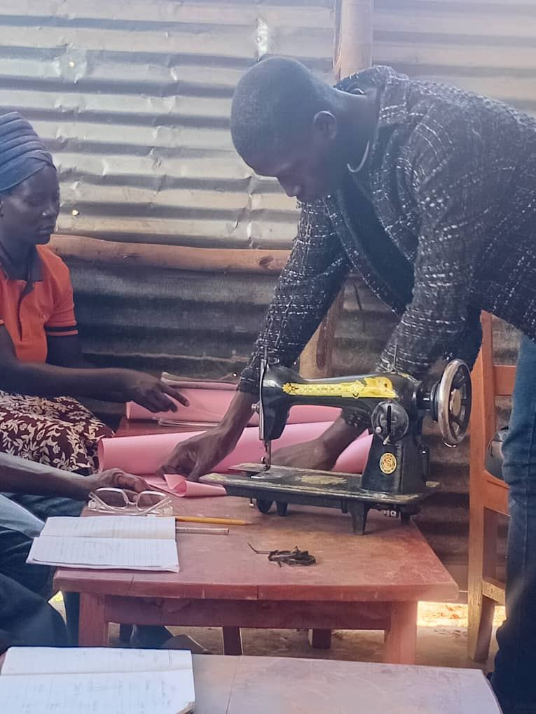
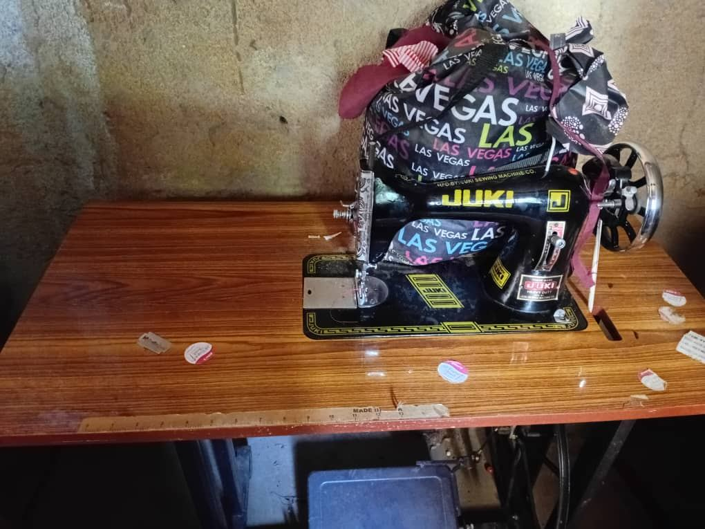
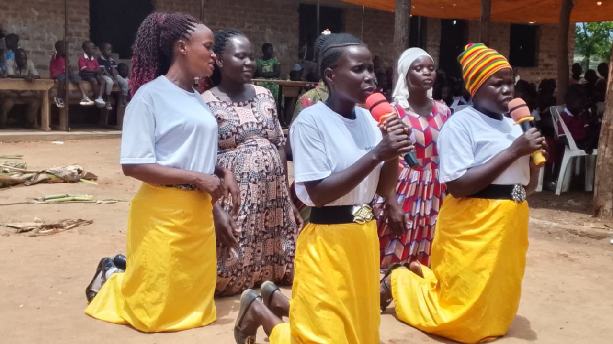
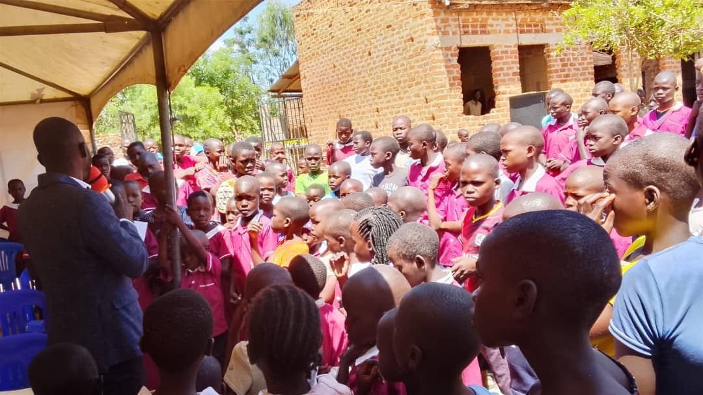
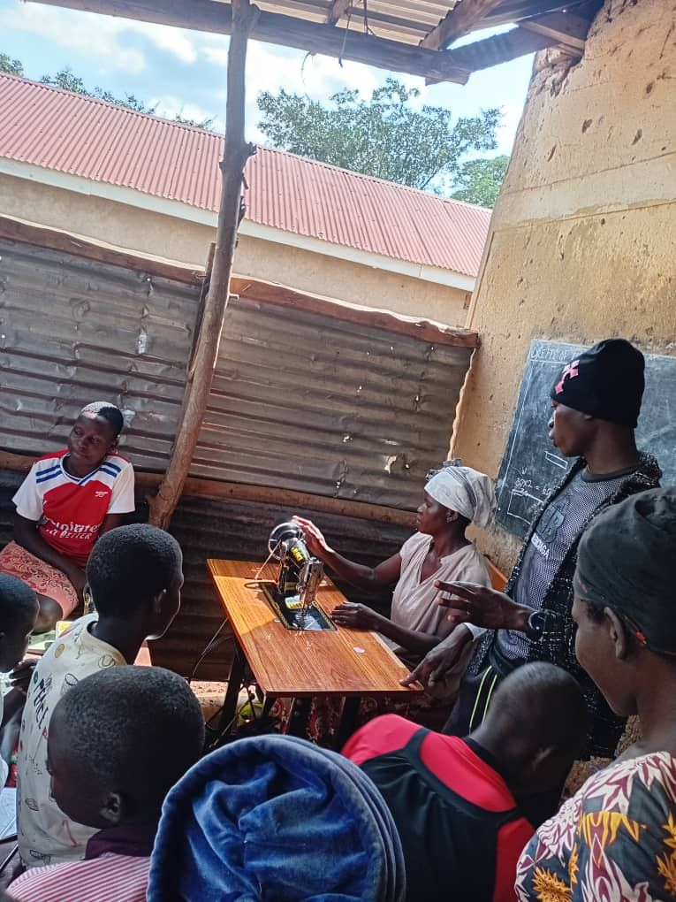

Stories in picturesPeople, places and
People, places and
progress in action.
A glimpse of the children, learning spaces, community relationships and people connected with Kireta Foundation.
Our photo gallery
Every picture tells part of the story.
We will continue adding photographs as programmes grow and new activities are documented.



















Documenting progress as it happens
These photographs document tailoring instruction, women’s skills development, locally made bricks, community infrastructure, worship and school life. We will continue to add photographs of farming and other activities as they become available.